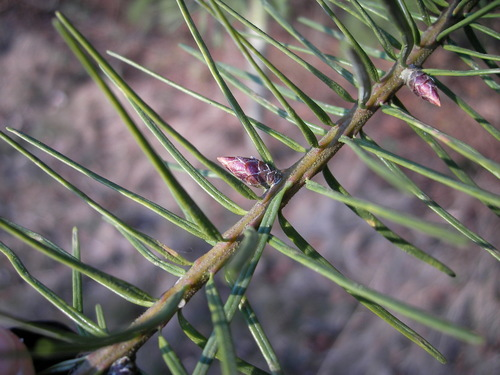

Andrena angustitarsata
Andrena angustitarsata native bee
Mining bees. One of the largest bee genera in the prairies; dozens of species across AB and SK.
9 documented plant relationships.
sips nectar at
 Leslie Seaton, some rights reserved (CC BY)") BalsamrootBalsamorhiza sagittata
BalsamrootBalsamorhiza sagittata Douglas Goldman, some rights reserved (CC BY-SA), uploaded by Douglas Goldman") ChokecherryPrunus virginiana
ChokecherryPrunus virginiana
Douglas FirPseudotsuga menziesii Mary Krieger, some rights reserved (CC BY), uploaded by Mary Krieger") Palmate-leaved ColtsfootPetasites frigidus
Palmate-leaved ColtsfootPetasites frigidus Slender Cinquefoil (Graceful Cinquefoil)Potentilla gracilis
Slender Cinquefoil (Graceful Cinquefoil)Potentilla gracilis Matt Lavin, some rights reserved (CC BY-SA)") Spring BeautyClaytonia lanceolata
Spring BeautyClaytonia lanceolata Alex Abair, some rights reserved (CC BY), uploaded by Alex Abair")
 Abby Hyde, some rights reserved (CC BY), uploaded by Abby Hyde")